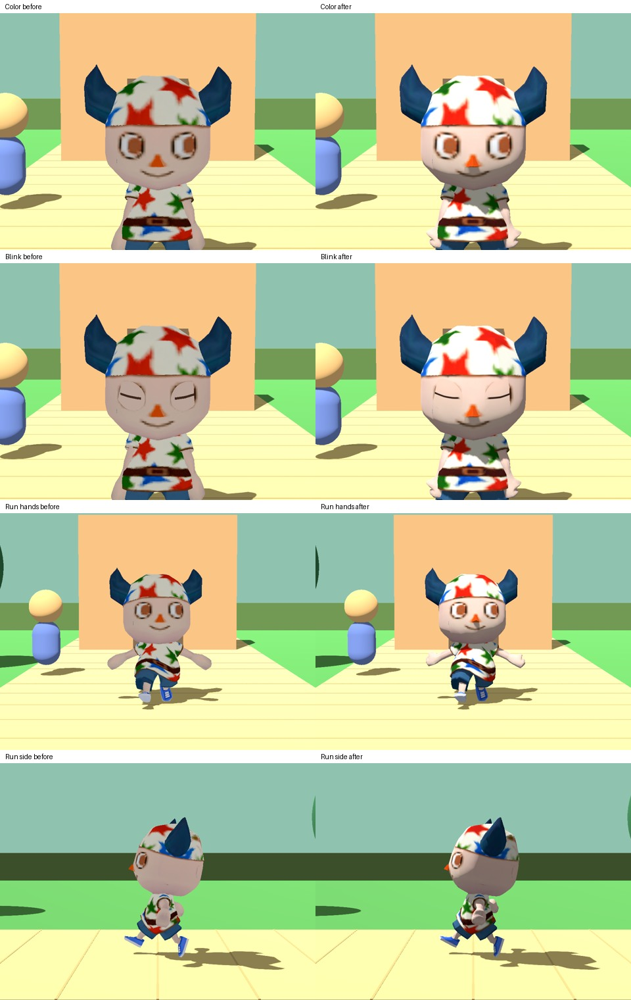
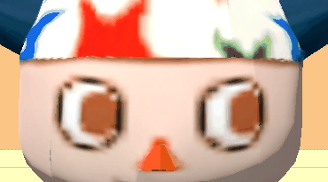
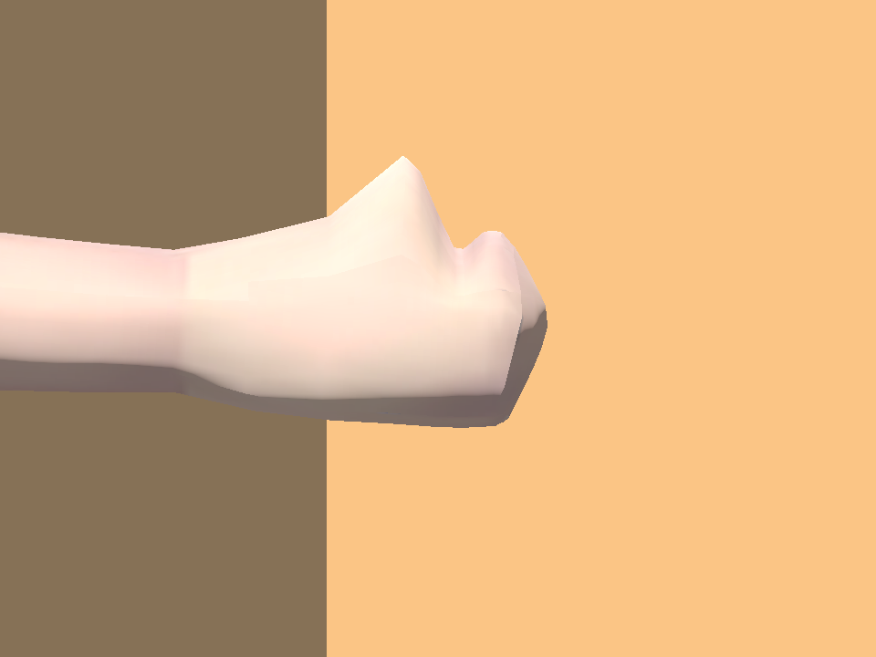

Walk around in the live demo · Issue and test results



Full view retained; original input and capture settings are uncertain. Exact likeness remains open.
Grass, path, snow, sand, water, leaves, indoor, then skid; each twice. These are locally synthesized cues. Exact original sounds, voice, ambience and original reverb remain open.